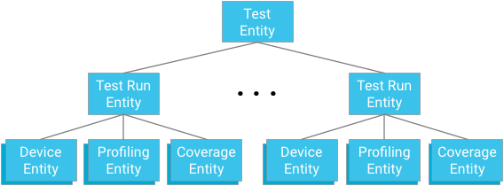
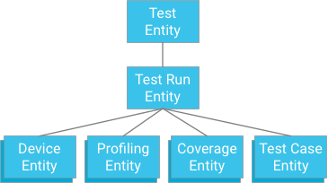
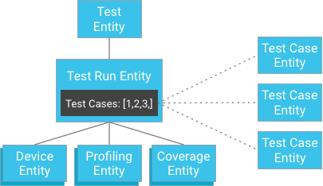

To support a continuous integration dashboard that is scalable, performant, and flexible, the VTS Dashboard backend must be carefully designed with a strong understanding of database functionality. Google Cloud Datastore is a NoSQL database that offers transactional ACID guarantees and eventual consistency as well as strong consistency within entity groups. However, the structure is very different than SQLdatabases (and even Cloud Bigtable); instead of tables, rows, and cells there are kinds, entities, and properties.
The following sections outline the data structure and querying patterns for creating an effective backend for the VTS Dashboard web service.
The following entities store summaries and resources from VTS test runs:
When designing ancestry relationships, you must balance the need to provide effective and consistent querying mechanisms against the limitations enforced by the database.
Each test module will represent the root of an entity group, with test run entities as children. Each test run entity is also a parent for device entities, profiling point entities, and coverage entities relevant to the respective test and test run ancestor.
The consistency requirement ensures that future operations will not see the effects of a transaction until it commits, and that transactions in the past are visible to present operations. In Cloud Datastore, entity grouping creates islands of strong read and write consistency within the group, which in this case is all of test runs and data related to a test module. This offers the following benefits:
Writing to an entity group at a rate faster than one entity per second is not advised as some writes may be rejected. As long as the alert jobs and the uploading does not happen at a rate faster than one write per second, the structure is solid and guarantees strong consistency.
Ultimately, the cap of one write per test module per second is reasonable because test runs usually take at least one minute including the overhead of the VTS framework; unless a test is consistently being executed simultaneously on more than 60 different hosts, there cannot be a write bottleneck. This becomes even more unlikely given that each module is part of a test plan which often takes longer than one hour. However, anomalies can easily be handled if hosts run the tests at the same time, causing short bursts of writes to the same hosts (e.g. by catching write errors and trying again).
A test run doesn't necessarily need to have the test as its parent (e.g. it could take some other key and have test name, test start time as properties); however, this will exchange strong consistency for eventual consistency. For instance, the alert job may not see a mutually consistent snapshot of the most recent test runs within a test module, which means that the global state may not depict a fully accurate representation of sequence of test runs. This may also impact the display of test runs within a single test module, which may not necessarily be a consistent snapshot of the run sequence. Eventually the snapshot will be consistent, but there are no guarantees the freshest data will be.
Another potential bottleneck is large tests with many test cases. The two operative constraints are the write throughput maximum within of an entity group of one per second, along with a maximum transaction size of 500 entities.
One natural approach would be to specify a test case that has a test run as an ancestor (similar to how coverage data, profiling data, and device information are stored):
While this approach offers atomicity and consistency, it imposes strong limitations on tests: If a transaction is limited to 500 entities, then a test can have no more than 498 test cases (assuming no coverage or profiling data). If a test were to exceed this, then a single transaction could not write all of the test case results at once, and dividing the test cases into separate transactions could exceed the maximum entity group write throughput of one iteration per second. As this solution will not scale well without sacrificing performance, it is not recommended.
However, instead of storing the test case results as children of the test run, the test cases can be stored independently and their keys provided to the test run (a test run contains a list of identifiers to its test cases entities):
At first glance, this may appear to break the strong consistency guarantee. However, if the client has a test run entity and a list of test case identifiers, it doesn't need to construct a query; it can instead directly get the test cases by their identifiers, which is always guaranteed to be consistent.
This approach vastly alleviates the constraint on the number of test cases a test run may have while gaining strong consistency without threatening excessive writing within an entity group.
The VTS Dashboard uses the following data access patterns:
For details on the UI and screenshots of these data patterns in action, see VTS Dashboard UI.